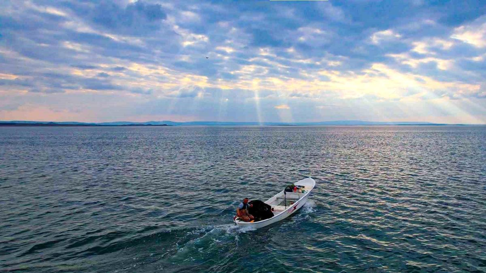
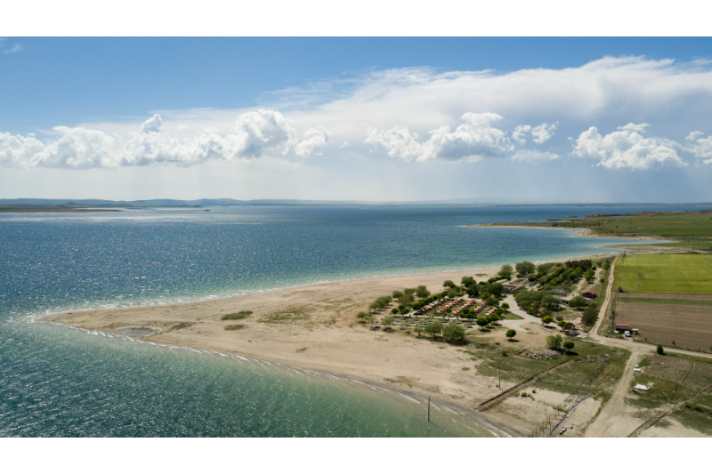
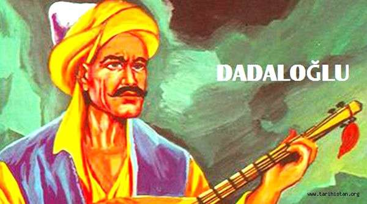

Kaman'ı Keşfedin
Doğanın ve kültürün iç içe geçtiği duraklar.
Savcılı Plajı
Savcılı Plajı, Kırşehir'in Kaman ilçesinde Hirfanlı Baraj Gölü kıyısında yer alan ve "Bozkırın Denizi" olarak bilinen popüler bir dinlenme alanıdır. Eşsiz bir kumsal ve dinlenme alanı sunar.

Hirfanlı Baraj Gölü
Bölgenin en büyük baraj gölü olan Hirfanlı, balıkçılık ve su sporları için harika bir adrestir. Gün batımı manzarası büyüleyicidir. Kırşehir ve Ankara illeri arasında, Kızılırmak üzerinde yer alan ve geniş yüzey alanı nedeniyle Türkiye'nin en önemli baraj göllerinden biridir.

Dadaloğlu Anıtı
Ünlü halk ozanı Dadaloğlu'nun hatırasını yaşatan bu park, Kaman'ın kültürel duraklarından biri.

Japon Bahçesi
Japonya dışındaki en büyük Japon bahçelerinden biri olan bu alan, huzur arayanlar için birebir.